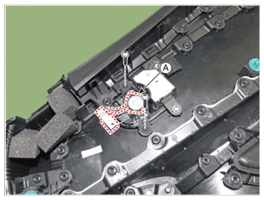

LEMON Manuals
: Even more car manuals for everyone: 1960-2025
Home
>>
Hyundai
>>
2022
>>
Elantra N Line, Standard Trans
>>
Repair and Diagnosis (Single Page)
>>
Accessories & Equipment
>>
Infotainment
>>
Audio/Video/Navigation (AVN) System (Except HEV)
>>
Speaker
>>
Repair Procedures
>>
Removal
>>
[Front Door Tweeter Speaker]
[Front Door Tweeter Speaker]
Disconnect the negative (-) battery terminal.
Remove the front door trim.
(Refer to Body - "
FRONT DOOR TRIM
")
Remove the tweeter speaker (A) after loosening screws.

Courtesy of HYUNDAI MOTOR AMERICA